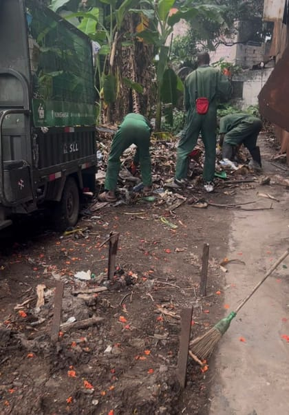

Collecte & Valorisation
Pousse-Où
Des déchets aux pavés.Une nouvelle vie pour nos ressources.
Kinshasa
Collecter. Transformer.Donner une nouvelle utilité.
À Kinshasa, Pousse-Où associe collecte, nettoyage et transformation des déchets en pavés. Une démarche concrète de valorisation.
Valorisation des déchets
Une seconde vie, en pavés.
Pousse-Où, l’entreprise d’Aaron, transforme des déchets en pavés. Cette activité prolonge la collecte : donner une nouvelle utilité à des matières récupérées, sous la forme de produits d’aménagement.


De la matière récupérée au produit fini : une autre façon de penser les déchets.
Services & Contact
Parlons de votre projet.

Nos solutions pour vous
-
Collecte & enlèvement
Prise en charge des déchets regroupés sur votre site.
-
Nettoyage des abords
Ramassage dans les cours, passages et espaces extérieurs.
-
Pavés & valorisation
Contactez-nous pour les modèles disponibles et votre besoin en pavés.
Contactez Pousse-Où
Collecte, nettoyage ou pavés : échangeons.
Kinshasa
Aaron Nzangi, fondateur de Pousse-Où, est Responsable des Achats de SUJO Engineering Consulting.